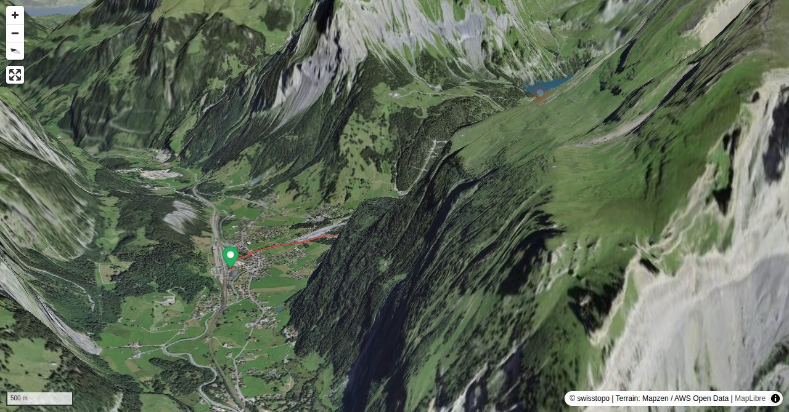

The route to the Doldenhorn hut follows a good, varied mountain path from Kandersteg. Depending on the season, a rich and unique flora can be admired. The route passing Dürreschwand offers an alternative ascent/ descent option.
Variant "Dürreschwand" ca. 15 min longer (plus 50 m elevation).
Quick Facts
| Summit elevation | 1915 m |
|---|---|
| Difficulty | SAC T2 Mountain hiking on marked trails with uneven terrain and some sustained ascent. Guide |
| Trailhead | Kandersteg, train station |
| Region | Northern Alps |
| Canton | Bern |
| Distance | 5.1 km (out-and-back) |
| Total ascent | ~742 m |
| Elevation range | 1170-1914 m |
| Route sources | SAC Route Portal |
| Route author | Bernhard Senn (via SAC Route Portal) |
Photos

Looking back over the Bäretritt in the lower part. (2017)
© SAC-CAS
The hut looks apparently close at the top of the Bäretritt, but its still a ways to go.
© Fabian Lippuner
Approach in the lower section in late spring.
© Senn-Erismann Bernhard · 05/2013
View into Kandertal from Obere Biberg.
© Senn-Erismann Bernhard · 05/2013
Close to the Doldenhornhütte.
© Senn-Erismann Bernhard · 08/2017
Doldenhornhütte - SAC section Emmental, on its rocky promontory above the sea of forest.
© Senn-Erismann Bernhard · 08/2017Photos: SAC-CAS, Fabian Lippuner, and Senn-Erismann Bernhard — via SAC Route Portal
Planning
i
i
sac_scale (precise T1–T6) with
swissTLM3D Wanderwegart
fallback where OSM is silent (coarser T2/T3 and T4+ buckets).
Coverage: OSM 61.1% · swisstopo 31.1% · unknown 6.2%.Elevations computed from the inlined GPX track (SwissTopo height API).
Loading forecast…
Start: Kandersteg, train station (1170 m)
Route returns to Kandersteg, train station.
3D Terrain View

Route Details
From Kandersteg via Öschiwald and Bäretritt
- Variant "Dürreschwand" ca. 15 min longer (plus 50 m elevation).
Source: SAC Route Portal
Field Reference
| Trailhead | Kandersteg, train station | 46.49520, 7.67170 |
|---|---|---|
| Summit | Doldenhornhuette Sac (1915 m) | 46.48689, 7.69742 |
Coordinates are WGS84 decimal degrees (lat, lon). Emergency: 112 (general) or 1414 (Rega air rescue). Page URL: